Una docena de montañeros se vieron ayer atrapados en dos aludes registrados en el monte Garmo Negro , en una zona del Pirineo de Huesca próxima a Panticosa.

La Guardia Civil rescató ayer a ocho de los excursionistas , mientras otros cuatro lograron salir por su propio pie.
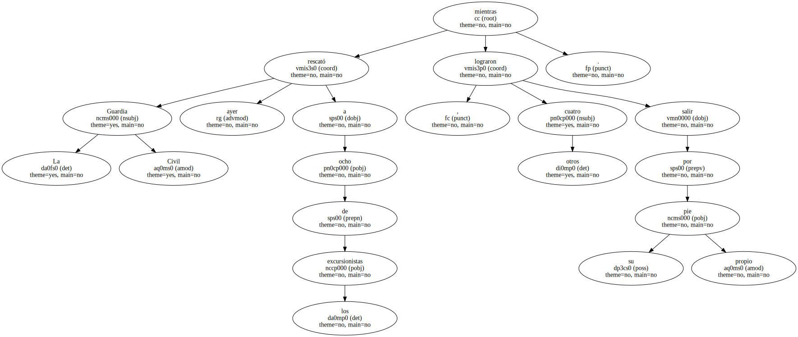La rápida intervención de los equipos evitó una desgracia.
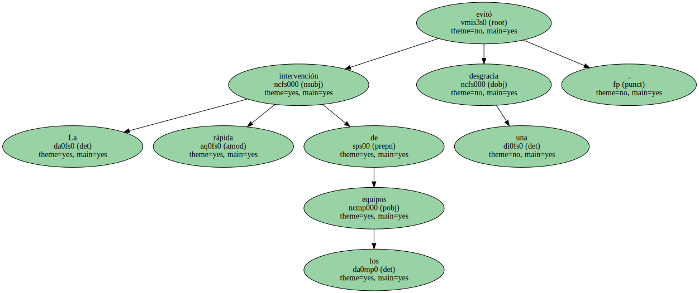Los ocho excursionistas que hubieron de ser rescatados se vieron sorprendidos , pasada la una de la tarde , por una avalancha de nieve de grandes dimensiones a unos 2.800 metros de altura.
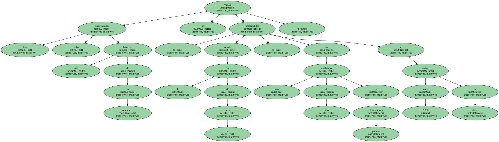La ola de nieve arrastró a todo el grupo y sepultó completamente a varios deportistas , que procedían de grupos diferentes.
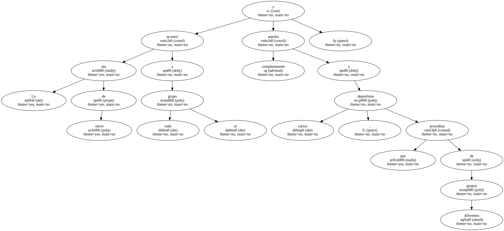Otros cuatro montañeros lograron salir por su propio pie de otra avalancha de menores dimensiones que se produjo una hora después del primer alud en la misma zona.
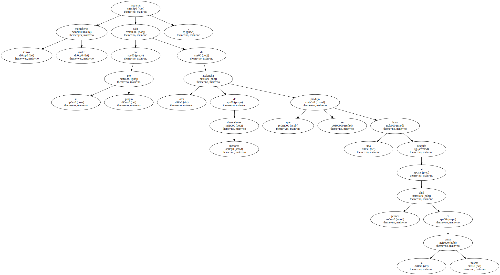Los montañeros accidentados pudieron pedir auxilio con una llamada al teléfono de emergencias 112 desde un aparato particular de otro excursionista que vio la caída de la avalancha sobre la expedición y alertó a la Guardia Civil de Huesca.
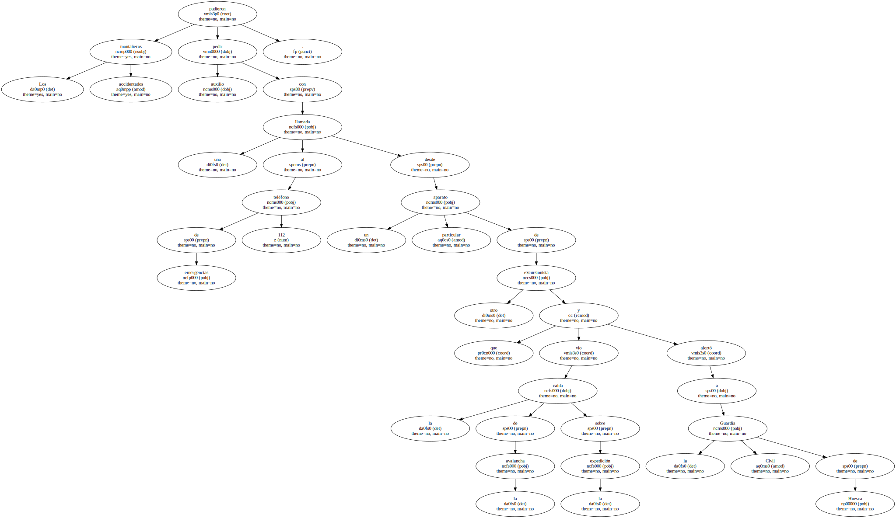Un grupo de rescate de Benasque se encargó de las operaciones , provistos de sondas y acompañados de perros adiestrados.
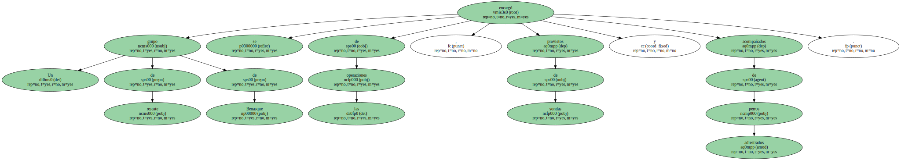El equipo se completó con un helicóptero de la Guardia Civil de Panticosa y otro del servicio de emergencia 112.
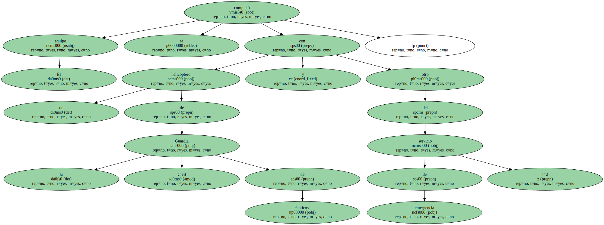Al lugar también se desplazaron rápidamente equipos de montaña de Jaca , Benasque y Boltaña.
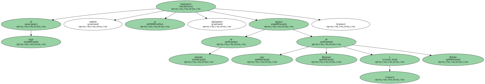Uno de los montañeros , que quedó atrapado en una oquedad de la nieve , tardó cuatro horas en ser localizado y extraído.
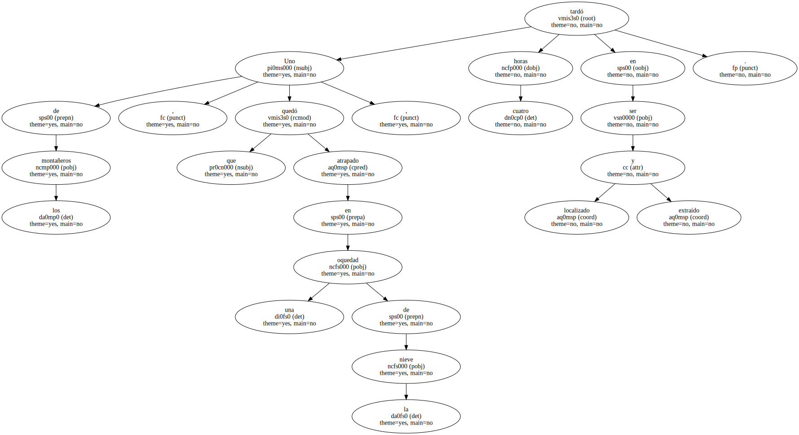Los deportistas rescatados presentaban heridas , síntomas de hipotermia y otras afecciones de diversa consideración.
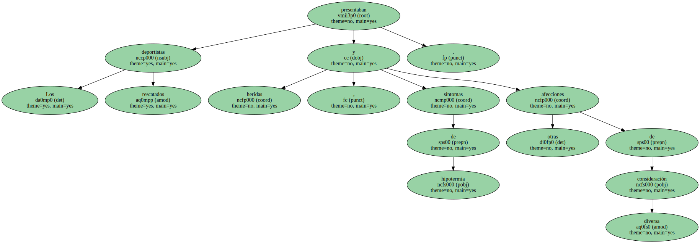Dos de ellos fueron evacuados en helicóptero al hospital San Jorge de Huesca , según fuentes del Gobierno de Aragón.
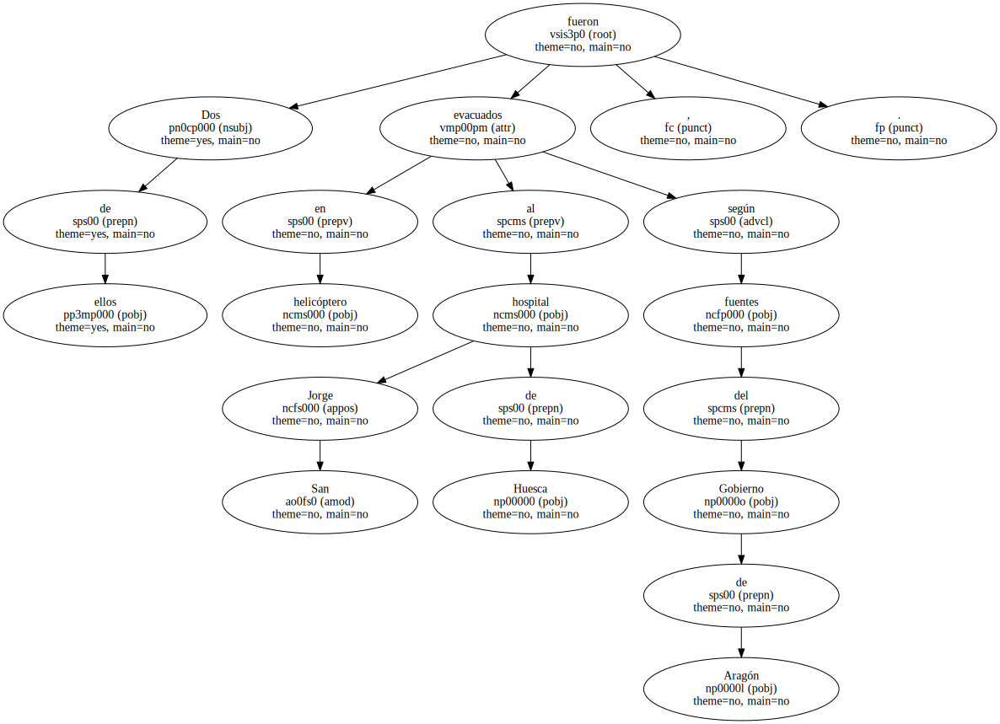El Servicio de Protección Civil ya había advertido hace unos días de la posibilidad de un riesgo de aludes en esta zona , derivado de las últimas nevadas registradas en el Pirineo aragonés y del aumento de temperatura de los últimos días.
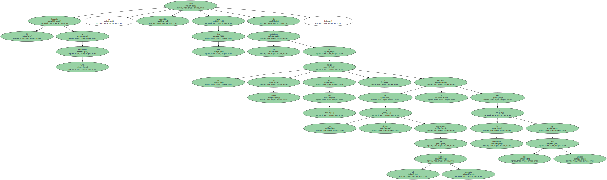